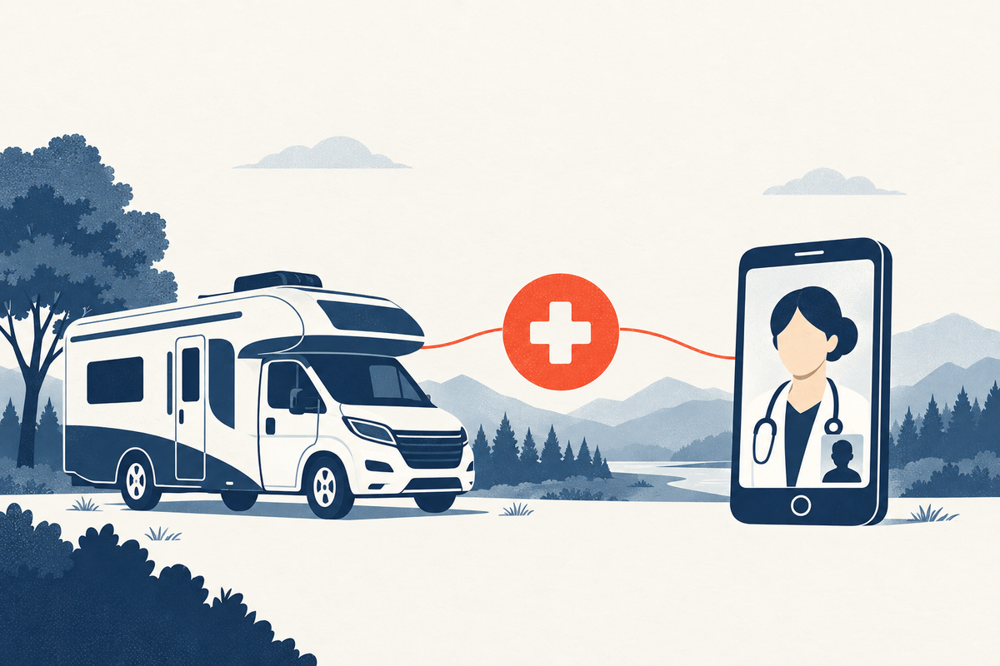

Key Takeaways
- Your state of residence, not the campground you are parked in, is what determines your health insurance, your pharmacy, and which clinicians can legally treat you by telehealth. Pick one state and hold it stable.
- Keep every prescription in its original labeled bottle and carry a written list of your medications. This is the single biggest tripwire for travelers, and it gets harder with controlled substances, which have stricter transport rules.
- A mail-order pharmacy that mails to your forwarding address solves most refill problems, but it cannot mail controlled substances across state lines in many cases, so plan those refills before you move.
- Telehealth can manage the most common on-the-road conditions, including uncomplicated UTIs, seasonal allergies, sinus infections, rashes, and self-limited diarrhea, provided the clinician is licensed in the state where you are currently located.
- Certain symptoms are not safe to treat by video: chest pain, trouble breathing, weakness or numbness on one side, high fever with stiff neck, and wounds that need stitching. Know the line between a telehealth visit and an emergency department.

Here is the thing nobody tells you before you move into an RV: the freedom is real, but the health care system is built for people with a fixed address. Every part of it, your insurance network, your pharmacy, your doctor's ability to call in a refill, assumes you live in one place. Live on wheels and you do not, and that one fact reshapes how you get care more than any single medical condition ever will.
This guide is for people who live in an RV full time, full-time van lifers, and anyone months into a cross-country stint whose home address is a PO box or a family member's spare room. It is written by a physician and covers the mechanics of staying healthy when you are never in one place: how to keep medications flowing, how telehealth does and does not work across state lines, the conditions RVers actually get, and how to tell the difference between something you can handle on video and something that needs an emergency room. Every medical claim is cited to a primary source.
Who This Guide Is For
You will get the most out of this if one of these describes you:
- You live in an RV, camper, van, or converted bus for most or all of the year, and your home moves with you.
- You have a state of residence for tax and mail purposes but spend most of the year somewhere else.
- You take at least one regular prescription and need to plan refills around travel.
- You use telehealth or urgent care as your primary way of seeing a clinician because you rarely stay near a single doctor long enough to establish care in person.
- You are planning to go full time and want to set up the health care side correctly before you hit the road.
If you are a recreational camper or a weekend traveler, this guide still applies, but your problems are simpler because you still have a home address and a home pharmacy. If you are a flight attendant or pilot, some of this overlaps, but the flight crews guide covers the job-specific risks of cabin pressure, jet lag, and long-haul immobility.
Why Living in an RV Changes Your Health Care
The medical problems an RVer faces are mostly the same problems everyone else gets: urinary tract infections, allergies, sinus infections, rashes, stomach bugs. What is different is not the diseases. It is the logistics of reaching care, and specifically three things.
First, continuity. Most people have one pharmacy and one clinic they never think about. An RVer changes location often enough that "call your usual pharmacy" does not work. Refills have to be routed somewhere, and somewhere has to be stable.
Second, jurisdiction. Medicine is licensed state by state. A physician can treat you by telehealth only if they hold a license in the state you are physically in at the moment of the visit. Cross a state line and, in most cases, the clinician on the other end needs to be licensed in that new state too.[10] This single fact governs almost everything else in this guide.
Third, your address. Insurance, and specifically your plan's provider network, is tied to your zip code. When your zip code changes weekly, keeping yourself in network becomes an exercise in planning rather than something that just happens.
None of this is a reason not to live in an RV. It is a reason to set up your health care deliberately, the way you set up your mail, your bank address, and your vehicle insurance.
To see how these three interact, picture a routine case. You are parked in Arizona on a Tuesday with a urinary tract infection, but your domicile is Texas and your health plan is a Texas marketplace plan. You cannot walk into a Texas clinic from an Arizona campground. Your real options are a telehealth visit with a clinician licensed in Arizona, an Arizona urgent care that may be out of network for your Texas plan, or a hospital you hope you will not need. Understanding that one sentence, domicile, licensure, and network, is most of what this guide is about.
How to Get Prescriptions and Refills on the Road
This is the question full-time RVers ask most often, and it is the one that goes wrong most often. The mechanics are simple once you understand them, but the consequences of getting it wrong, running out of a blood pressure pill or an inhaler two days from the nearest pharmacy, are not.
Keep medications in their original bottles
Travel with every prescription in its original pharmacy-labeled container. This is not a nicety. A pill organizer is convenient at a campsite but can be legally problematic when you cross state lines, and law enforcement during a traffic stop can and does ask about loose pills. Federal law requires most controlled substances to remain in their original labeled bottles while in transit.[12] Carry a current written list of every medication, dose, and prescriber, and keep a photo of each prescription label on your phone.
Use a mail-order pharmacy for everything routine
For non-controlled maintenance medications, a mail-order pharmacy is the single most reliable fix. Have your clinician send maintenance prescriptions to a pharmacy that mails, and route delivery to a stable receiving address, a family member, a mail-forwarding service, or a campground that accepts packages. Order refills early and set calendar reminders. The goal is to never be the person standing in a strange town explaining to a new pharmacist that you are out of your medication.
Plan controlled substances the farthest ahead
Controlled medications, the stimulants, benzodiazepines, and opioids, are the hardest to keep flowing on the road. Many states limit where a controlled-substance prescription written by an out-of-state clinician can be filled, and a mail-order pharmacy often cannot ship them across state lines. If you take one of these, refill it before you leave a state, keep it in its original bottle with your name on it, and know that your prescribing clinician will generally need to be licensed in the state where the prescription is dispensed. These medications are outside the scope of this guide's telehealth discussion and should be managed with your established prescriber.
When you do run low away from home
If you are out of a routine medication and away from your usual prescriber, the cleanest path is a telehealth or walk-in visit to get a short-term refill of a non-controlled medication, or to have your established clinician send a new prescription to a national chain pharmacy near your current location. National pharmacies can transfer a non-controlled prescription between their own locations, which is itself a useful reason to pick one chain and stick to it.
| Medication type | Refills on the road | Mail-order across states | Original bottle |
|---|---|---|---|
| Non-controlled (blood pressure, cholesterol, inhalers, most daily medicines) | Mail-order to a stable address; national chain transfer; telehealth or walk-in for a short refill | Usually allowed | Recommended |
| Controlled (stimulants, benzodiazepines, opioids) | Refill with your established prescriber before travel; fill rules vary by state | Often not allowed | Required by law[12] |
Your Domicile and State of Residence, Explained
Every full-time RVer eventually confronts the word "domicile," and it matters for health care more than most people realize. Your domicile is the single state you intend to return to and consider your true, fixed home. It is where your legal residence sits, and it does not change just because you have been parked in Arizona for four months.
Why it matters: your domicile determines which marketplace or employer health plan you are eligible for, which Medicaid or subsidies you can claim, and the state whose licensure rules your telehealth clinicians must satisfy when they treat you there.[11] It is also the state your mail-forwarding address typically resolves to.
The common RVer states for domicile, Texas, South Dakota, and Florida among them, are popular precisely because their residency rules are friendly to people without a physical home and their laws treat full-time travelers predictably. This is a legal and tax decision, and it is worth getting professional advice on it, but from a purely medical standpoint the rule is simple: pick one state, keep it stable, and route your insurance and your prescriptions through that state. Do not let your official residence drift accidentally from state to state while you travel.
Telehealth on the Road: What It Can and Cannot Do
Telehealth has quietly become the backbone of care for people who live on the road, because it removes the single biggest barrier: geography. For many acute, non-emergency problems, a synchronous video visit with a licensed clinician can take a history, look at a rash through the camera, and prescribe a non-controlled medication that a pharmacy near you can fill the same day.
The state license is the limiting factor
The rule to remember is that a physician must be licensed in the state where the patient is physically located at the time of the visit.[10] This exists to protect patients and is not something a telehealth service can waive. In practice, when you book a visit, the service will ask or confirm your current location, and it will match you to a clinician licensed for that state. Move into a new state, and your next visit is simply matched to that state's licensure. The Interstate Medical Licensure Compact has made it far easier for physicians to hold licenses in many states at once, which is part of why your care does not fall apart at a border.[10]
What works well on video
Telehealth is a strong fit for short, discrete problems with clear decision rules, and the conditions in this guide are all of that kind: uncomplicated urinary tract infections, seasonal allergies, sinus infections, straightforward rashes, tick bites, and self-limited stomach bugs. What these have in common is that the diagnosis leans heavily on the story you tell and what the clinician can see, not on a physical exam instrument. A typical visit is a short video call: you describe the symptoms, when they started, and what you have already tried, and the clinician asks the questions that rule out the serious versions of your complaint before deciding on a plan. Because the visit can happen from a campground, you get an answer without detouring from your route.
What does not work on video
A video visit cannot listen to your lungs, feel your abdomen, suture a wound, or run a test. Chest pain, difficulty breathing, severe abdominal pain, weakness or numbness on one side of the body, a high fever with a stiff neck, or a deep or dirty wound should send you to an emergency department or urgent care in person, not to a telehealth queue. The honest way to frame it: telehealth is a first stop for common, low-risk problems, not a substitute for a stethoscope when the stakes are high.
Common Conditions When You Live in an RV
RVers do not get exotic diseases. The conditions that fill their searches and their clinic visits are the same common infections everyone else gets, tilted slightly by life outdoors, variable water quality, and long stretches away from a sink. The four that come up most are urinary tract infections, allergies and sinus trouble, skin problems from plants and ticks, and stomach bugs. The sections that follow are the evidence-backed basics for each, with the part that matters most on the road: when you can manage it with a telehealth visit and when you cannot.
| Condition | Typical first-line approach | Telehealth a good fit? |
|---|---|---|
| Urinary tract infection | Short antibiotic course (nitrofurantoin, TMP-SMX, or fosfomycin)[1] | Yes, for uncomplicated symptoms |
| Seasonal allergies | Intranasal steroid spray and an antihistamine[6] | Yes |
| Sinus congestion | Self-care first; antibiotics only for certain patterns[2] | Yes, to decide if needed |
| Poison ivy or plant rash | Wash skin and gear promptly; seek care if the rash is severe or widespread | Yes |
| Tick bite | Prompt removal; possible single-dose doxycycline after 36-plus hours[4] | Yes, to weigh prophylaxis |
| Traveler's diarrhea | Hydration first; loperamide; antibiotics for moderate to severe[5] | Yes |
Urinary Tract Infections
A urinary tract infection, or UTI, is an infection of the bladder, and it is one of the most common infections in women anywhere, on the road or not. It is also the closest thing there is to a poster child for telehealth, because the diagnosis is made from a clean, specific set of symptoms rather than a machine: burning when you urinate, needing to go frequently and urgently, and passing little each time. When those are present without fever, flank pain, or back pain, it is an uncomplicated bladder infection. UTIs are common on the road partly because travel disrupts the two things that protect the bladder most: regular hydration and not holding urine for hours on long drives.
The 2011 Infectious Diseases Society of America guideline, still the standard, recommends short, targeted antibiotics: nitrofurantoin 100 mg twice daily for five days, trimethoprim-sulfamethoxazole (TMP-SMX) for three days, or fosfomycin as a single dose.[1] Your clinician chooses based on your allergies and what you have tolerated before. A telehealth visit for a straightforward UTI is appropriate; a 2026-era visit will typically ask about fever, flank pain, and pregnancy history, because those change the picture and may push you toward in-person testing.
Go in person, not by video, if you have fever, chills, flank or back pain, or vomiting alongside urinary symptoms, or if you are pregnant. Fever and flank pain suggest the infection may have moved up toward the kidney, which is a different and more serious situation.[1]
Allergies and Sinus Infections
Life outdoors means more pollen, more mold, and more dust, and seasonal allergies are among the most common complaints from full-time travelers. The current guidance for allergic rhinitis, the sneezing, runny nose, and itchy eyes triggered by airborne allergens, puts intranasal corticosteroid sprays and second-generation antihistamines at the center of treatment, with the nasal spray doing the heavy lifting for congestion and the antihistamine for sneezing and itch.[6] Most of these are available over the counter, which is useful when a pharmacy is far away.
A "sinus infection" is usually not an infection at all. Most acute sinus congestion is viral and gets better on its own in about a week to ten days. The 2012 IDSA guideline on acute bacterial rhinosinusitis reserves antibiotics for the minority, and its practical signals for when bacteria are more likely are: symptoms lasting ten days or more without improving, high fever with thick colored nasal discharge for three or more days, or symptoms that improve and then get worse again.[2] If any of those apply, or pain is severe on one side or around the eyes, that is when a clinician, by telehealth or in person, should decide whether antibiotics are warranted.
Rashes, Poison Ivy, and Tick Bites
Skin problems are where life outdoors catches up with you. Poison ivy, poison oak, and poison sumac cause an itchy, blistering rash that appears one to three days after contact and can last for several weeks untreated. The rash is not contagious and cannot be spread from the blisters; it is spread only by the plant oil that is still on your skin, clothes, or gear, which is why washing everything promptly after exposure shortens the misery.
Tick bites are a different category because of Lyme disease. The good news is that the risk is not immediate: the deer tick that transmits Lyme must usually be attached for 36 to 48 hours before transmission becomes likely.[3] Removing a tick with fine-tipped tweezers, grasped close to the skin and pulled straight up without twisting or crushing it, is the single most effective prevention step.[8] For a deer tick attached at least 36 hours in a high-risk area, a single 200 mg dose of doxycycline taken within 72 hours sharply cuts the chance of later Lyme disease, and a landmark trial showed it reduced the rate from 3.2 percent to 0.4 percent.[4] Doxycycline has important limits: it is not used in pregnancy or in young children, and the decision is best made with a clinician who can weigh the attachment time and geography.
After a tick bite, watch the area for a few weeks. A gradually expanding red rash, especially a "bull's-eye," or new fever, aches, or joint pain, is a reason to be seen promptly, because early Lyme is far easier to treat than late Lyme.[3]
Diarrhea and Stomach Bugs on the Road
Loose stools on the road come from unfamiliar food and occasionally from water of uncertain quality, and the overwhelming majority are self-limited. The evidence-based approach to traveler's diarrhea, the same principles that apply to any short bout of foodborne illness, starts with hydration. Oral rehydration, the mix of water, salt, and sugar, matters more than any medication, because the main danger is dehydration, not the diarrhea itself.[7]
For uncomplicated episodes, loperamide, the over-the-counter anti-diarrheal, can reduce the frequency of stools, and a course of antibiotics is reserved for moderate-to-severe cases, defined as more than a few loose stools in a day plus significant symptoms like cramps, nausea, or fever.[5] A clinician can guide and, when appropriate, prescribe for this by telehealth. Get medical help sooner if you see blood in the stool, if you have a high fever, if you cannot keep fluids down, or if diarrhea lasts more than a few days, because those point away from a self-limited bug.
Heat, Dehydration, and High Elevation
Two of the more serious ways the road can hurt you have nothing to do with infection and everything to do with where you stop. Both are preventable, and both are easy to miss until they become serious.
Heat illness follows a clear ladder. Heat exhaustion is the warning stage: heavy sweating, weakness, headache, nausea, and feeling faint or dizzy after time in the heat. Stop, sip water, get to shade or air conditioning, and cool the skin, and it usually resolves on its own. Heat stroke is a different animal and a medical emergency. The body stops cooling itself, and confusion, slurred speech, or loss of consciousness can follow. Someone with heat stroke needs emergency care immediately, not a video visit and not a longer drive.[15] The practical rules on the road are to drink before you feel thirsty on hot days, avoid the hottest hours for anything strenuous, and never leave anyone, pets included, in a closed vehicle.
High elevation is the other one people walk into without meaning to, usually by crossing a mountain pass and parking for the night above 8,000 feet.[16] Acute mountain sickness tends to appear within hours of gaining altitude: headache, fatigue, poor appetite, nausea, and poor sleep. It is usually mild and improves as the body adapts over a day or two. The right move is to stop ascending, rest, hydrate, and take over-the-counter acetaminophen for the headache.[16] The danger signs that mean descend now and get medical help are trouble breathing at rest, confusion, or a cough bringing up pink, frothy fluid, which can signal high-altitude pulmonary edema.[16] If you take regular medications or have heart or lung disease, or you are traveling with young children, talk with a clinician before planning a stay at high elevation.
Managing a Chronic Condition While Traveling
High blood pressure, asthma, diabetes, cholesterol, thyroid: these do not pause when you move, and they are the reason the prescription section of this guide matters so much. The single most important move for a chronic condition on the road is to never run out of medication, because the consequences of an abrupt stop, a missed blood pressure pill is one thing, a missed asthma controller or diabetic medication is another, are avoidable with a mail-order pharmacy and a calendar.
Beyond refills, keep a one-page summary of your conditions, medications, and allergies, plus recent lab results or a home blood-pressure log if you track one, so that any new clinician you see by telehealth or in person can pick up where your last one left off. The CDC's guidance for travelers with chronic conditions is built on exactly this principle: carry your medical summary and plan your refills ahead, because continuity is the part that fails first.[17] For blood pressure, a home cuff and a log are genuinely useful and let a telehealth clinician make medication decisions without you sitting in an office. For conditions that need blood tests or imaging, plan those when you pass through a larger town rather than letting them lapse for a year.
Health Insurance That Works When You Move
Health insurance on the road comes down to one rule: pick a plan whose network and pharmacy cover the places you actually go, and tie it to your state of domicile, not to wherever you are parked this month. The Affordable Care Act marketplace plans are issued by state, and moving your domicile to a new state triggers a special enrollment period, a window to enroll outside the usual fall open enrollment.[14] If you travel, look for a plan with a broad or national network, or at minimum a national pharmacy network, and accept that you may sometimes pay out-of-network rates for a clinic visit in a state your plan does not serve well.
Medicare deserves a specific caution. Original Medicare generally covers you anywhere in the United States, which makes it friendlier to full-time travel than a Medicare Advantage plan, whose network is often regional and can become useless once you leave the plan's service area.[13] If you are approaching Medicare age and planning to travel full time, this choice, Original Medicare versus a regional Advantage plan, is the one you most need to get right, and it is worth discussing with an advisor or the State Health Insurance Assistance Program before you commit.
This guide does not sell insurance and does not recommend specific plans. It is flagging the two decisions that most determine whether your coverage follows you: your state of domicile, and your network breadth.
None of this needs to turn into an annual research project. The two questions to answer once, and then revisit only when you change your domicile or your plan renews, are these: what state of residence is on my insurance, and does my plan's network and pharmacy follow me where I actually go. Answer those, and most of the rest of staying insured on the road handles itself.
What to Pack: A Travel Health Kit
Much of staying healthy on the road is having the basics before you need them. A travel health kit for full-time travel is short and cheap, and it pays for itself the first time you are twenty miles from a store with a headache, a scrape, and a low-grade fever. What to keep in it:
- A written medication list and a small supply of any daily prescription, in original bottles.
- Over-the-counter basics: acetaminophen or ibuprofen, an antihistamine, a nasal saline spray, loperamide, and oral rehydration salts.
- First aid: bandages, antiseptic wipes, fine-tipped tweezers for tick removal, and hydrocortisone cream.
- A thermometer, a home blood-pressure cuff if you take blood pressure medication, and any daily home monitoring you already do.
- A copy of your insurance card and your clinician's contact information, plus a record of your allergies.
Telehealth, Urgent Care, or ER: How to Decide
| Situation | Best choice | Why |
|---|---|---|
| Burning with urination, no fever or back pain | Telehealth | Uncomplicated UTI is diagnosed by symptoms; a short antibiotic course is standard.[1] |
| Sneezing, runny nose, itchy eyes | Telehealth or self-care | Allergic rhinitis is usually managed with over-the-counter nasal spray and antihistamine.[6] |
| Cough or sinus pressure under 10 days, no high fever | Self-care, then telehealth | Most acute sinus symptoms are viral and self-limited.[2] |
| New rash after possible poison ivy or tick bite | Telehealth, or urgent care | A clinician can often assess a rash by video; a tick bite may warrant a preventive dose of doxycycline.[4] |
| Chest pain, trouble breathing, one-sided weakness or numbness | Emergency department | These are not assessable by video and can be life-threatening. |
| Deep, dirty, or gaping wound, or a cut that will not stop bleeding | Urgent care or ER in person | Wounds need hands-on cleaning, stitching, and sometimes a tetanus update. |
| High fever with stiff neck, or severe abdominal pain, or vomiting up blood | Emergency department | These may signal infection or a surgical problem that needs immediate testing. |
Red Flags: Get In-Person Care Now
Some symptoms should never wait for a video visit or the next stop on your route. Go to an emergency department or call emergency services, and err on the side of going, if any of these appear:
- Chest pain, pressure, or tightness, or pain radiating to the arm, jaw, or back.
- Difficulty breathing, or shortness of breath that is new or getting worse.
- Sudden weakness, numbness, or drooping on one side of the face or body, or sudden trouble speaking.
- A severe headache, or a fever with a stiff neck.
- High fever with chills or flank or back pain, which can mean a kidney infection.[1]
- Severe abdominal pain, vomiting up blood, or blood in the stool.
- A wound that is deep, dirty, gaping, or will not stop bleeding, or a bite from an animal.
- Any head injury with loss of consciousness, confusion, or repeated vomiting.
What Does Not Work (and Common Myths)
Some things people do on the road feel helpful but are not, and one of them is flatly dangerous.
- Sharing or splitting your own prescriptions. Taking a leftover antibiotic or a family member's medication for a new problem is risky. The wrong antibiotic for the wrong bug can worsen an infection, and leftover medication treats nothing reliably.
- Cranberry juice as a cure for an active UTI. Cranberry may have a small role in prevention for some people, but it does not treat an established bladder infection, and delaying a short, effective antibiotic course while sipping juice is a mistake.[1]
- Keeping pills loose in a single bottle or unlabeled organizer across state lines. Covered above, but it bears repeating: originals bottles, labeled, are the rule for travel.
- Assuming telehealth works identically in every state. It does not break at state lines, but it is governed by them, and a service or clinician licensed for one state will match you by location, not by your mailing address.[10]
- Believing the rash is harmless because the blisters "spread." Poison ivy fluid cannot spread the rash; what spreads it is unwashed plant oil still on skin and gear.
Frequently Asked Questions
Yes, generally. The clinician must be licensed in the state where you are physically located at the time of the visit, so the service will ask your current location and match you to a clinician licensed there. Your state of residence is a separate matter and does not restrict where a licensed clinician can treat you while you are traveling.
For non-controlled medications, use a mail-order pharmacy routed to a stable address and order early. If you run low away from home, a national chain can transfer a non-controlled prescription between its own stores, or a telehealth or walk-in visit can issue a short-term refill. Controlled substances have stricter rules and should be refilled with your established prescriber before you travel.
Strongly yes for controlled substances, which must stay in their original labeled containers. For everything else it is still the safest practice, because an original labeled bottle is your proof that a medication is prescribed to you, and it prevents mix-ups.
Your domicile is the single state that is your true, fixed home. It determines your health plan eligibility, your subsidies, and the state your telehealth clinicians must be licensed in when you are physically there. Keep one domicile stable rather than letting it drift, and route insurance and prescriptions through it.
Remove it promptly with fine-tipped tweezers pulled straight up. Lyme transmission usually requires 36 to 48 hours of attachment, so removing it soon is the main step. In a high-risk area with a deer tick attached at least 36 hours, a single dose of doxycycline within 72 hours lowers the chance of later Lyme, and that decision is best made with a clinician. Watch the bite site for a few weeks for an expanding rash or new fever or aches.
Yes, for appropriate non-controlled medications. Conditions like an uncomplicated UTI can be diagnosed and treated with a short antibiotic course during a telehealth visit. What cannot be done by video are physical-exam-dependent or emergency problems, which is why fever, flank pain, chest pain, or trouble breathing change the plan.
Original Medicare generally covers you anywhere in the United States, which suits travel. Medicare Advantage plans often use a regional network that stops working well once you leave the plan's service area. If you travel full time, that network breadth difference is usually the deciding factor.
Go to an emergency department for chest pain, trouble breathing, one-sided weakness or numbness or facial drooping, severe headache or fever with stiff neck, severe abdominal pain, blood in the stool, or a deep and dirty wound. These need hands-on examination, tests, or both, and none of them should wait for a video visit.
Keep a home blood-pressure cuff and a simple log, never run out of your medication by using a mail-order pharmacy, and bring your log to a telehealth visit when you need a medication adjustment. A clinician can make most medication decisions from your readings and history without an in-person visit, but blood tests you need should be scheduled when you pass through a larger town.
For most chronic conditions, yes, with planning. The risks are practical rather than medical: running out of medication, losing continuity when you move, and letting routine blood tests or monitoring lapse. Fix those with a mail-order pharmacy, a portable health record, and scheduled care when you pass through larger towns, and the chronic condition itself travels fine.
References
- Gupta K, Hooton TM, Naber KG, et al. International clinical practice guidelines for the treatment of acute uncomplicated cystitis and pyelonephritis in women: A 2010 update by the Infectious Diseases Society of America and the European Society for Microbiology and Infectious Diseases. Clinical Infectious Diseases. 2011;52(5):e103-e120. PMID 21292654
- Chow AW, Benninger MS, Brook I, et al. IDSA clinical practice guideline for acute bacterial rhinosinusitis in children and adults. Clinical Infectious Diseases. 2012;54(8):e72-e112. PMID 22438350
- Lantos PM, Rumbaugh J, Bockenstedt LK, et al. Clinical Practice Guidelines by the Infectious Diseases Society of America (IDSA), American Academy of Neurology (AAN), and American College of Rheumatology (ACR): 2020 Guidelines for the Prevention, Diagnosis and Treatment of Lyme Disease. Clinical Infectious Diseases. 2021;72(1):e1-e48. PMID 33417672
- Nadelman RB, Nowakowski J, Fish D, et al. Prophylaxis with single-dose doxycycline for the prevention of Lyme disease after an Ixodes scapularis tick bite. New England Journal of Medicine. 2001;345(2):79-84. PMID 11450675
- Riddle MS, Connor BA, Beeching NJ, et al. Guidelines for the prevention and treatment of travelers' diarrhea: a graded expert panel report. Journal of Travel Medicine. 2017;24(suppl_1):S57-S74. PMC5731448
- Vieira RJ, Sousa-Pinto B, Bousquet J, et al. Allergic Rhinitis and Its Impact on Asthma (ARIA)-EAACI Guidelines, 2024-2025 Revision. Allergy. 2026. PMID 41877472
- Centers for Disease Control and Prevention. Travelers' Diarrhea. CDC Yellow Book 2024: Health Information for International Travel. CDC Yellow Book
- Centers for Disease Control and Prevention. Tick Removal. CDC Ticks
- Centers for Disease Control and Prevention. About Common Cold. CDC Common Cold
- Federation of State Medical Boards. Interstate Medical Licensure Compact. IMLCC.org
- U.S. Department of Health and Human Services. Telehealth. telehealth.hhs.gov
- Centers for Disease Control and Prevention. Traveling with Prescription and Controlled Medications. CDC Yellow Book 2024. CDC Yellow Book
- Medicare.gov. Compare Original Medicare and Medicare Advantage. Medicare.gov
- HealthCare.gov. Special enrollment period for people who move. HealthCare.gov
- National Institute for Occupational Safety and Health. Heat Stress: Heat-Related Illnesses. Centers for Disease Control and Prevention. CDC NIOSH
- Centers for Disease Control and Prevention. High-Altitude Travel and Altitude Illness. CDC Yellow Book 2024. CDC Yellow Book
- Centers for Disease Control and Prevention. Travelers with Chronic Illnesses. CDC Yellow Book 2024. CDC Yellow Book